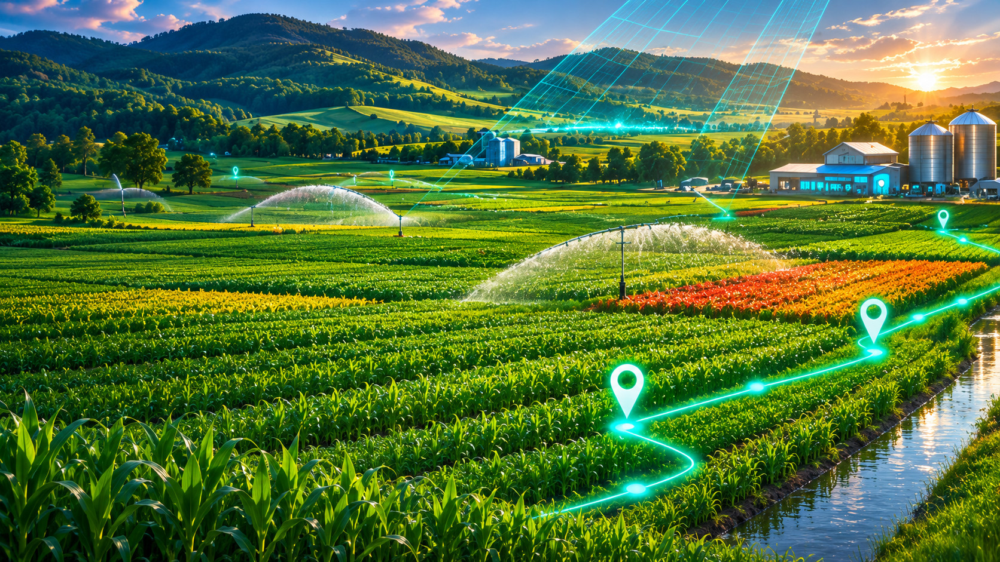

This is the actual background asset loaded by Mission Control. The animated 3D rover remains a separate simulated Canvas layer.

To run the full system launch START_AGRIORBIT_WINDOWS.cmd and visit http://127.0.0.1:8020.